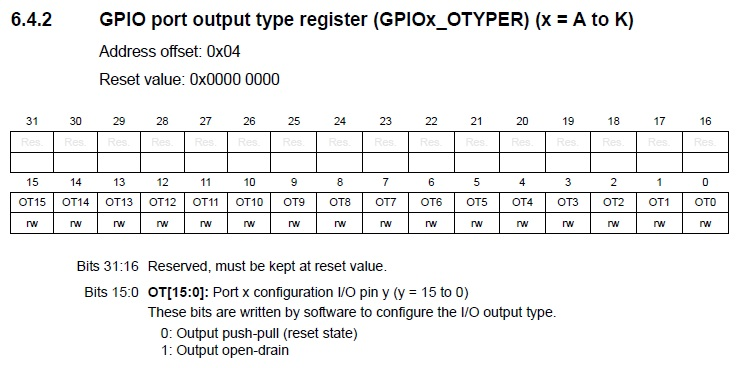
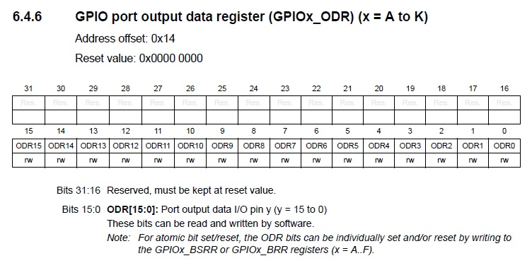
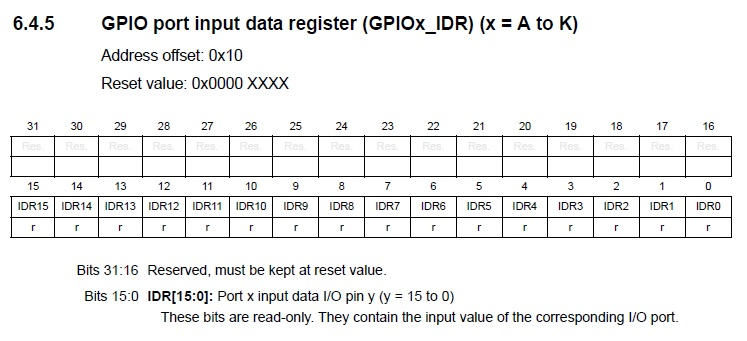
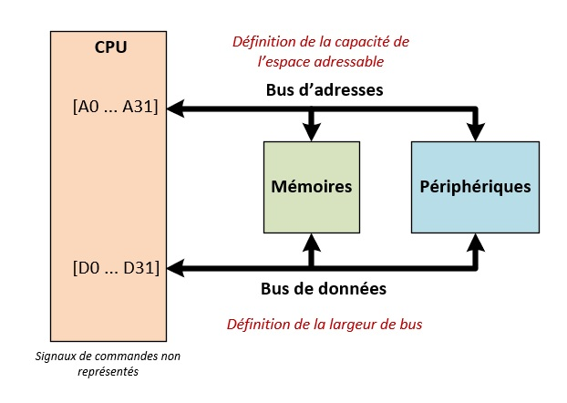
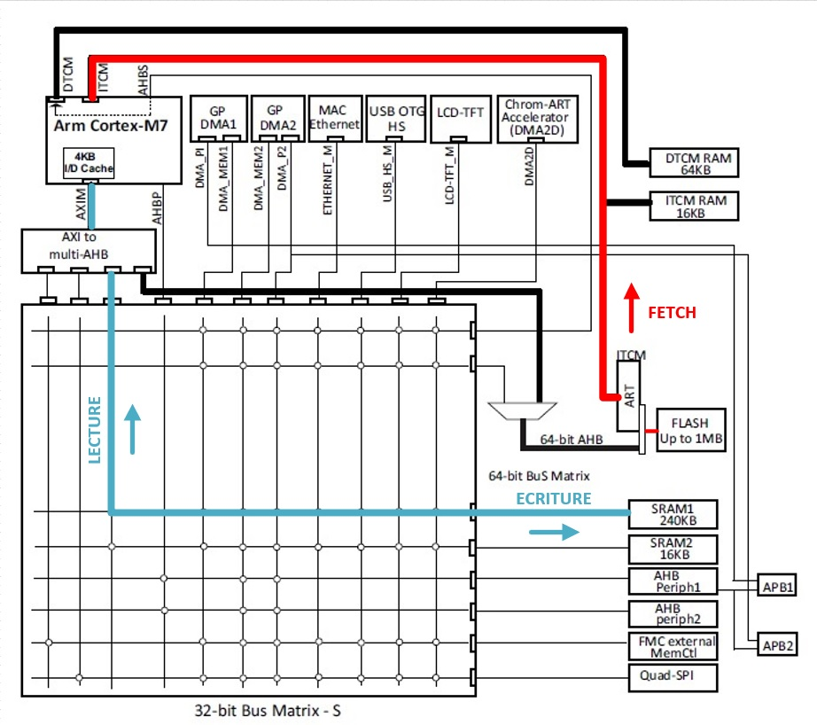
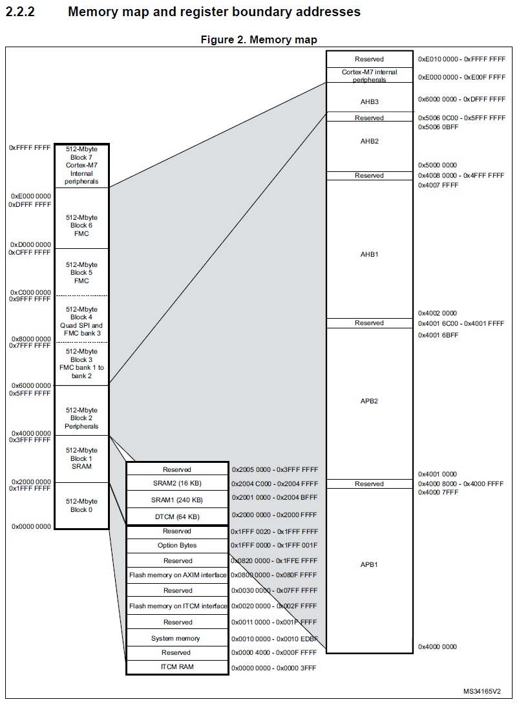

Schriiiiiiiii ⛓, Schlack ⛓️💥, Boaang 🚧, ..., ..., Criiiiiiii😶 !
Aah ! Vous revoilà ! J'ai bien cru vous avoir perdu durant le chapitre sur l'architecture des MCU, mais vous n'avez pas abandonné. On m'avait bien dit que j'avais affaire à la crème de la crème. Allez, rentrez vite, aujourd'hui, nous allons parler périphérique, mémoire et registre.
Pas les sujets les plus passionnants du monde me diriez-vous ? Et effectivement, je n'en dirais pas moins. Cependant, l'étude de ces notions est indispensable à la bonne compréhension du fonctionnement d'un MCU. Nous sommes donc obligés de passer pas là 😒.
Néanmoins, le prix à payer ne sera pas sans bénéfice. À la fin de cet article, vous connaîtrez les principes de fonctionnement des périphériques, vous saurez comment ceux-ci sont interconnectés au MCU et vous serez même en mesure d'interconnecter des périphériques externes, réalisés par vos soins, à votre microcontrôleur favoris (et oui 😉).
Emballant, n'est-ce pas ? Allez, entamons de suite la lecture de cet article !
1. Les registres du MCU
Avant de parler registre, commençons par parler périphérique. Dans le chapitre précédent, nous avons vu qu'un périphérique était un dispositif électronique que l'on reliait au MCU afin de lui ajouter de nouvelles fonctionnalités. Cette définition est claire, mais soulève une question de la plus haute importance 🤔. Par quel moyen le MCU arrive-t-il à piloter ses périphériques ? Ne cherchez pas midi à quatorze heures, la réponse est simple et vous vous en doutez, via l'utilisation des registres.
En fonction de leur complexité, les périphériques peuvent posséder une dizaine de registres pour les plus simples et jusqu'à une centaine de registres pour les plus complexes (périphériques USB ou Ethernet par exemple). Leur fonctionnement est décrit dans le manuel de référence du composant.
1-1. Un premier pas avec les registres
Comprendre le fonctionnement des registres pour un profane n'est pas chose aisée et je pense que pour bien clarifier leur fonctionnement, l'étude d'un cas concret s'impose. Prenons donc comme exemple le périphérique GPIO. Celui-ci a pour mission de piloter les broches d'entrées-sorties du composant. Pour moi, c'est le périphérique idéal pour commencer à programmer avec les registres.
Étudions donc le pseudo-code ci-dessous. Son but est de positionner la broche d'entrée-sortie PA0 (port A broche 0) au niveau logique haut :
/* 1. Dans un premier temps, on déclare des pointeurs et on les initialise avec les adresses des registres à configurer. On reviendra sur ces lignes dans la suite de l'article. */ uint32_t* GPIOA_MODER = 0x40020000; uint32_t* GPIOA_OTYPER = 0x40020004; uint32_t* GPIOA_PUPDR = 0x4002000C; uint32_t* GPIOA_ODR = 0x40020014; /* 2. Dans un deuxième temps, on configure les broches du port GPIOA. On positionne d'abord la broche PA0 en sortie et les broches PA1 à PA15 en entrée (registre MODER). Ensuite, on active l'étage PUSH-PULL de chaque broche (registre OTYPER) puis on désactive les résistances de tirage (registre PUPDR). */ *GPIOA_MODER = 0x00000001; *GPIOA_OTYPER = 0x00000000; *GPIOA_PUPDR = 0x00000000; /* 3. Enfin, on positionne la broche PA0 au niveau logique haut. */ *GPIOA_ODR |= 0x1;
En observant ce petit bout de code, on remarque déjà que la programmation des registres d'un périphérique ne demande pas un niveau de programmation exceptionnel. Du point de vue du développeur, programmer un registre consiste juste à venir écrire une valeur dans la mémoire (un Magic Number).
❔
C'est bien beau ce que tu nous racontes, mais comment as-tu fait pour déterminer les valeurs à écrire ?
Très bonne question ! En fait, toutes les informations nécessaires à la programmation des registres sont présentes dans le manuel de référence du composant RM0385, de manière, je dirais, plus ou moins éparse ... Mais pas d'inquiétude, contrairement à certains dont je ne saurais prononcer le nom, les équipes de STMicroelectronics sont rigoureuses et leurs documentations est plutôt bien écrites 👌.
💬
Yeah ! Un point pour ST ! Zéro point pour Freesc..😶🤐 ! Arf, ma langue a encore fourché 😊 !
Allez, trêve de plaisanterie, commençons de suite à expliquer comment déterminer les valeurs à écrire dans nos registres.
1-2. Le registre GPIO_MODER
Dans le petit bout de code précédent, plusieurs registres ont été écrits pour configurer la broche PA0. Le registre MODER a permis de configurer la broche en sortie. Le registre OTYPER a permis d'activer l'étage PUSH-PULL et le registre PUPDR a permis de désactiver les résistances de tirage.
Pour déterminer les valeurs à écrire, je suis simplement allez lire la documentation du périphérique GPIO présente dans le manuel de référence. J'ai d'ailleurs trouvé la description suivante pour le registre GPIOx_MODER :

Dans la figure ci-dessus, on s'aperçoit que le registre est constitué de 16 champs, un pour chacune des 16 broches GPIO du port. Chaque broche peut être configurée en entrée en écrivant la valeur 0, en sortie en écrivant la valeur 1, en mode analogique en écrivant la valeur 3 ou en routage de fonctions auxiliaires en écrivant la valeur 2. Dans l'exemple précédent, j'ai choisi volontairement de configurer la broche PA0 en sortie et les autres en entrée. J'ai donc écrit la valeur 1 dans le registre. Cependant, en fonction de l'application, j'aurais pu configurer le registre de plein d'autres manières :
/* 1. PA0 à PA14 en sortie (1), PA15 en mode analogique (3) */ *GPIOA_MODER = 0xD5555555; /* Valeur binaire : 1101 0101 0101 0101 0101 0101 0101 0101 */ /* 2. PA0 et PA1 en mode auxiliaire (2), PA2 à PA15 en entrée (0) */ *GPIOA_MODER = 0x0000000A; /* Valeur binaire : 0000 0000 0000 0000 0000 0000 0000 1010 */ /* 3. Un soupçon plus compliqué, PA0 en sortie (1) et PA1 à PA14 non modifiés. */ *GPIOA_MODER &= 0xFFFFFFFE; *GPIOA_MODER |= 0x00000001; /* On positionne à zéro le premier bit (&=) puis on positionne PA0 en sortie (|=) */
Vous voyez, programmer les registres n'est vraiment pas compliqué. Il suffit juste de lire attentivement la datasheet du composant puis d'appliquer les configurations désirées.
1-3. Le registre GPIO_OTYPER
Passons maintenant à l'explication du registre OTYPER dont la mission est de configurer l'étage de sortie d'une broche en mode PUSH-PULL ou OPEN-DRAIN :

Contrairement au registre précédent, on remarque que seuls les 16 bits de poids faible du registre sont implémentés. Le registre possède toujours 16 champs (un pour chaque broche) mais leur taille est réduite à 1 bit. On observe qu'un niveau 0 active l'étage PUSH-PULL alors qu'un niveau 1 active l'étage OPEN-DRAIN. Allez, comme précédemment quelques petits exemples de configuration :
/* PA0 à PA15 en OPEN-DRAIN */ *GPIOA_OTYPER = 0x0000FFFF; /* PA0 à PA3 en PUSH-PULL, PA4 à PA15 en OPEN-DRAIN */ *GPIOA_OTYPER = 0x0000FFF0; /* PA11 en OPEN-DRAIN, le reste en PUSH-PULL. */ *GPIOA_OTYPER = 0x00000800; /* A noter que sauf mention contraire dans la documentation, les bits non implémentés peuvent être écrits à une valeur arbitraire dans le programme. La solution ci-dessous est donc aussi valide pour positionner PA11 en OPEN-DRAIN. Cependant, par convention tacite, on utilise toujours la valeur zéro. */ *GPIOA_OTYPER = 0xFFFF0800;
Bon, à mon avis, la configuration des registres doit commencer à rentrer ! Pour ceux qui montreraient encore quelques difficultés, je vous conseille de noter les bits à configurer sur un bout de papier puis de réaliser la conversion de chaque quartet binaire en hexadécimal. Cette technique est infaillible 👌 et je vous assure que même les meilleurs l'utilisent (véridique à 100%).
À noter que pour les plus curieux et pour ceux qui se demandent à quoi correspondent les montages PUSH-PULL et OPEN-DRAIN, j'ai rédigé un article expliquant comment sélectionner le driver de sortie d'une broche GPIO. Vous pouvez le retrouver en suivant ce 🌼 magnifique lien 🌼 !
1-4. Le registre GPIO_PUPDR
Allez, revenons à nos moutons 🐑 et passons à la configuration des résistances de tirage de notre GPIO via le registre PUPDR :

Le fonctionnement est similaire aux registres précédents, la valeur 0 déconnecte les résistances de tirage de la broche, la valeur 1 connecte une résistance de PULL-UP et la valeur 2 connecte une résistance de PULL-DOWN. Je n'ai pas grand-chose à ajouter mis à part que, dans notre exemple, on écrivait la valeur 0 pour désactiver toutes les résistances du port.
1-5. Le registre GPIO_ODR
Passons maintenant au dernier registre, le registre GPIOA_ODR. Sa description est la suivante :

Pas de mystère pour ce registre, la valeur 1 positionne la broche correspondante au niveau logique haut et la valeur 0 la positionne au niveau logique bas. Pour activer la broche PA0, il faut donc écrire la valeur 1 dans le bit ODR0 :
*GPIOA_ODR |= 0x1;
1-6. Le registre GPIO_IDR
Les plus observateurs auront remarqué que le registre ODR est dédié aux sorties numériques. Il est donc naturel de se demander si ce registre peut aussi être utilisé pour relire l'état d'une entrée numérique.
Comme vous vous en doutez, la réponse est non. Lorsque vous
souhaitez relire l'état d'une entrée numérique, le registre ODR ne
peut pas être utilisé. Il faut impérativement utiliser le registre
IDR qui est dédié à lecture des entrées numériques :

En fait, lorsqu'une broche est configurée en entrée, la lecture du registre ODR renverra la valeur écrite dans le registre et non pas la valeur relue sur le port. Il faut donc bien faire attention à utiliser le bon registre en fonction de la situation. L'exemple ci-dessous montre les cas d'utilisation des registres ODR et IDR :
/* On réalise une lecture du registre ODR lorsque le port est configuré en sortie et que l'on souhaite positionner un port sans toucher les autres broches GPIO */ /* Lecture du port A puis activation de PA0 */ myRegister = *GPIOA_ODR; *GPIOA_ODR = myRegister | 0x1; /* On réalise une lecture du registre IDR lorsque le port est configuré en entrée et que l'on souhaite relire l'état d'une broche GPIO */ /* Lecture de PA0 */ myRegister = ( *GPIOA_IDR ) & 0x1;
1-7. En résumé
Bon ! La partie manipulation de registres et Magic Number est maintenant terminée. Ce fut une brève introduction, mais celle-ci était nécessaire pour faire découvrir aux néophytes comment ces petits registres fonctionnaient. Qui sait, peut-être qu'une vocation sera naît chez quelques-uns même si cela m'étonnerait grandement 😌.
Avant de passer à la suite, j'aimerais que nous résumions rapidement les points importants. Ne vous en faites pas, celà ne prendra pas longtemps ^^ :
- ✔ Point 1 : les registres sont les interfaces de configuration des périphériques. Ils sont configurés en réalisant de simple accès mémoires en lecture et ou en écriture.
- ✔ Point 2 : les valeurs à écrire dans les registres sont décrites dans le manuel de référence du composant. Dans la littérature, on désigne souvent ces valeurs sous le terme de Magic Number car elles semblent tirées du chapeau.
Voilà, c'est tout ! Vous voyez, au final, cette première partie était longue, mais il n'y avait vraiment pas grand-chose à mémoriser. Maintenant, nous pouvons passer à la prochaine partie, l'adressage du MCU. Vous vous souvenez tout à l'heure, j'ai déclaré des pointeurs pour y inscrire de mystèrieurses adresses :
/* Dans un premier temps, on déclare des pointeurs et on les initialise avec les adresse des registres à configurer. On reviendra sur ces lignes dans la suite de l'article. */ uint32_t* GPIOA_MODER = 0x40020000; uint32_t* GPIOA_OTYPER = 0x40020004; uint32_t* GPIOA_PUPDR = 0x4002000C; uint32_t* GPIOA_ODR = 0x40020014;
Et bien, dans la prochaine partie, nous allons découvrir comment j'ai réussi à déterminer la valeur de ces adresses et d'une manière plus générales, comment les périphériques et les mémoires sont organisés dans le MCU. Allez, c'est parti 🚀.
2. L'adressage du MCU
Comme à son habitude, apprendre une nouvelle notion dans le monde des microcontrôleurs nécessite toujours d'en découvrir au moins deux de plus. Comme vous vous en doutez, l'adressage ne fait pas exception à la règle. Mais d'ailleurs, avant de commencer, c'est quoi l'adressage ?
💬
En programmation, l'adressage est un procédé qui consiste à assigner une adresse ou une plage d'adresse physique à une mémoire ou à un périphérique. Ces adresses correspondent à des numéros uniques et sont non modifiables. Elles sont choisies lors de la conception du microcontrôleur.
Pour les personnes débutant la programmation, la notion d'adressage n'est pas forcément intuitive. Cependant, on peut faire une analogie simple en comparant l'adressage d'un MCU avec le processus de distribution du courrier. En effet, là où un facteur doit connaître l'adresse de votre domicile pour vous délivrer un courrier, un MCU doit connaître l'adresse de ces constituants pour communiquer avec eux. En outre, là où un facteur utilisera une route pour transporter un message, un MCU utilisera un bus de communication. L'adressage est donc le moyen mis en oeuvre dans les MCU pour déservir un message vers une entité spécifique.
Structurellement, l'adressage d'un MCU repose sur deux caractéristiques : l'espace adressable et la largeur de bus . D'ailleurs, je vais m'empresser de vous les définir dans les prochains paragraphes.
2-1. L'espace adressable
Cette notion peut vous paraitre obscure, mais rassurez-vous, ce n'est vraiment pas une notion difficile à assimiler :
💬
L'espace adressable correspond juste à la capacité mémoire qu'un CPU peut adresser. C'est à dire au nombre total d'adresses que le CPU possède.
En fait, l'espace adressage découle directement du nombre de broches d'adresses du bus de communication qu'utilise le processeur pour adresser ses constituants (mémoires et périphériques). Par exemple, un espace adressable de 32bits indique que le CPU utilise 32 lignes d'adresses (A0 à A31) et que son espace adressable est de 2^32 adresses.
Il faut cependant faire attention à ne confondre l'espace adressable avec la quantité de mémoire intégrée dans le MCU. En effet, un espace adressable de 32bits signifie que notre microcontroleur a la capacité d'adresser jusqu'à 4GB de mémoire. Pour autant, cela ne signifie pas que le MCU est équipé de cette quantité de mémoire.
En pratique, sur les microcontrôleurs, seul une portion de l'espace adressable est implémenté par les mémoires et les périphériques. Le reste est laissé inutilisé.
2-2. La largeur de bus
La seconde notion que je voulais introduire est la largeur de bus :
💬
La largeur de bus correspond à la quantité maximale d'octets pouvant être récupérés à chaque accès sur un bus de communication.
Physiquement, la largeur de bus correspond au nombre de broches de données d'un bus. Par exemple, pour une largeur de 32bits (D0 à D31), il est possible de récupérer à chaque accès, au maximum 4 octets.
2-3. L'espace adressable et la largeur de bus en image
Afin de ne pas vous emmeler les pinceaux, je vous ai créé un petit synoptique qui vous aidera à bien différencier les deux notions précédentes :

On observe que le bus d'adresses (A0 à A31) et le bus de données ont la même taille (D0 à D31). Le bus de données définit la largeur de bus et le bus d'adresse définit la capacité de l'espace adressable.
Par ailleurs, on remarque que toutes les mémoires et tous les périphériques sont reliés au bus de communication. Le CPU peut donc discuter avec l'ensemble de ces constituants. Si celui-ci souhaite communiquer avec un organe précis, il réalise à peu de chose près, le protocole suivant :
- ✔ D'abord, il définit le type de requête à réaliser (lecture/écriture) via un signal de commande.
- ✔ Ensuite, il transfert une adresse sur le bus de communication pour sélectionner le composant avec lesquel il souhaite communiquer (par exemple une mémoire).
- ✔ Enfin, il déclenche la requête de communication pour lire ou écrire la donnée désirée.
Voilà, ce n'est pas plus compliqué que ça ! Cependant, notez que le protocole ci-dessus est imagé. En réalité, des signaux de commandes interviennent à chaque étape de la transaction. J'ai volontairement simplifié le protocole pour vous permettre de mieux apréhender la communication entre un CPU et ses périphériques.
2-3. Les technologies de microcontrôleurs
Avant de passer à l'organisation des MCU, j'aimerais faire un aparté sur les technologies 8bits, 16bits et 32bits des microcontrôleurs.
❔
Ah oui c'est une bonne idée ça ! En plus les micros sont souvent classifier comme ça. Mais au fond, ça correspond à quoi ?
En fait, lorsque l'on parle de microcontrôleurs 8bits, 16bits ou 32bits, on désigne la largeur du bus de données.
Un microcontrôleur 8bits travaillera avec un bus de données de taille 8bits (lignes D0 à D7), un microcontrôleur 16bits avec un bus de taille 16 bits (lignes D0 à D15) et un microcontrôleur 32bits avec un bus de taille 32bits (lignes D0 à D31).
Il est à noter que d'une manière général, un microcontroleur 32bits sera toujours plus performants que ces antagonistes 16bits et 8bits. Cela est principalement du à la course aux performances s'étant produit du balbutiement des MCU et qui de nos jours continue toujours.
❔
Ah oui c'est une bonne idée ça ! En plus les micros sont souvent classifier comme ça. Mais au fond, ça correspond à quoi ?
Notez cependant que l'espace adressable d'un microcontrôleur est décoléré de la largeur du bus de données. En effet, un microcontroleur 8bits n'est pas limité à 256 octets d'adresses mais possède au moins toujours quelques kilo-octets de mémoire. C'est d'ailleurs un bon moyen mémo-technique pour s'en rappeler.
Enfin pour terminer cet aparté, utiliser un bus de taille restreinte (8bits par exemple) ne veut pas dire qu'il est impossible de travailler avec des données de taille supérieur (16bits ou 32bits par exemple). En fait, cela dépend entiérement du jeu d'instructions. En général, le traitement de données 16bits ou 32bits sur un microcontrôleur 8bits sera juste plus long. En effet, là ou un microcontroleur 32bits aurait fetcher un mot de 4 octets en un cylce avec une seule instruction, un microcontroleur 8bits le récupérera en plusieurs cyles avec une ou plusieurs instructions.
2-4. L'organisation du MCU
Dans le chapitre précédent dédié à l'architecture du MCU, nous avons vu qu'un MCU était constitué de plusieurs mémoires et d'un ensemble de périphériques. Nous avons vu ensuite que ces éléments étaient reliés au CPU par des bus de communication et que des accès mémoires pouvaient être réalisés pour récupérer des informations :

C'est bon, ça vous revient ? Parfait ! Il est maintenant temps de vous introduire deux nouvelles notions : l'espace adressable et la largeur de bus.
❔
Ok, on comprends mieux. Par contre, l'espace adressable n'a rien à voir avec les notions de microcontrôleur 8bits, 16bits ou 32 bits ?
Je vais maintenant vous présentez la figure allant de paire avec celle-ci. Mes chères lecteurs, voici la cartographie mémoire des processeurs STM32F74x et STM32F75x (âmes sensibles s'abstenir 🫣) :

Commençons dès à présent à l'expliquer. Celle-ci se lit de gauche à droite. La colonne de gauche montre que notre MCU possède un espace adressable de 4GB décomposé en 8 sections de taille 512MB.
Allez, ceci étant dit, continuons d'analyser notre figure. Mais où est-ce qu'on s'était arrêté déjà 🤔 ? Ah oui ! Ca me revient. Je disais donc que l'espace adressable était décomposé en 8 sections de même taille ^^. D'ailleurs, on observe que :
- ✔ Le premier bloc contient les mémoires dédiées au programme. On discerne notamment la mémoire FLASH (accessible par les bus ITCM et AXIM) et la mémoire RAM ITCM (mémoire volatile très rapide permettant d'exécuter un programme). La figure nous précise aussi l'adresse de chacune de ces mémoires.
- ✔ Le deuxième bloc contient les mémoires dédiées aux données. On discerne les mémoire SRAM1, SRAM2 et DTCM. Comme précédemment chaque mémoire possède une adresse distincte.
- ✔ Le troisième bloc contient les périphériques des domaines APB1, APB2, AHB1 et AHB2. Le microcontrôleur possédant beaucoup de périphériques, la description de ces blocs est réalisée plus loin dans le manuel de référence. Mais ne vous inquiétez pas, chaque périphérique se verra aussi adresser une adresse unique.
- ✔ Les blocs suivants sont dédiés aux périphériques du domaine AHB3 (FMC et QSPI). Ce sont en fait des blocs de réserve utilisés lorsque l'on branche des mémoires externe au MCU. On reviendra dessus dans la dernière partie de cet article.
- ✔ Enfin, le dernier bloc contient les périphériques internes du CPU (coeur ARM).
D'ailleurs, on observe que . La troisième section (bloc 2) contient les périphériques des domaines APB1, APB2, AHB1 et AHB2. Les sections 4 à 7 (bloc 3 à 6) contiennent les périphériques du domaine AHB3 (FMC) et la dernière section (bloc 7) contient les registres internes du CPU.
- ✔ La taille du bus d'adresses (en bits) définie la taille de l'espace adressable (c'est à dire le nombre maximal d'adresse).
- ✔ La taille du bus de données (en bits) définie la taille maximale des données récupérable à chaque accès.
💬
Les registres sont les interfaces de contrôle permettant de piloter un périphérique. Ni plus, ni moins.